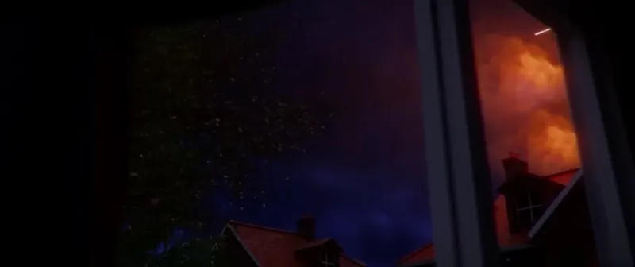

01
Every sponsor segment is custom-made, animated, and designed to be part of the episode itself by being directly written into the narrative. This makes our partnerships truly native.
Video is the future of journalism.
source: watchfern.com/about
The team behind fern has been honored with several creative awards.
fern 2023
Born in 2023.
Animation
On the ground
Great Reporting, On Youtube
Electrify January 2025
About us and our partners
01
Every sponsor segment is custom-made, animated, and designed to be part of the episode itself by being directly written into the narrative. This makes our partnerships truly native.

02
Cinematic visuals, deep research and fact based storytelling by a team of journalists and creatives is what makes fern a trusted voice and a safe, high-quality environment for brand partners.
03
We partner with brands that value high production quality, thoughtful storytelling and an intelligent, curious audience.
We are always looking for talent. Check out our current open roles and come join the team.
| Position | Location | Category |
|---|---|---|
| There are currently no jobs available. | ||
fern is a play on the German words “Fernweh” (a longing for distant places, or homesickness for a place you’ve never been) and “fernsehen” (to watch television). It’s also a plant in English, hence the green.
fern is the brainchild of German YouTubers David and Jonas (Simplicissimus, 2 Bored Guys), and Dutch YouTuber Hoog. He has since stepped back to focus on his main channel, but remains the voice behind some videos.
In 2025, we took an investment from Electrify to stabilize the company and reduce the day-to-day operational load on the founders. That allowed us to grow the team and focus on making better videos than ever. Electrify isn’t involved in the creative process, and we remain editorially independent.
We work with a team of dedicated 2D and 3D animators, and tend to use AI only in the background for non-creative tasks like upscaling, image extension, or file organization. Beyond legal and ethical questions, we believe people value work that other humans have put real care and intention into. We use generative AI only very selectively.